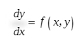

METODE EULER¶
Persamaan differensial adalah pesamaan yang memuat turunan satu (atau beberapa ) fungsi yang tidak diketahui.
Suatu persamaan diferensial yang terdiri dari satu variabel bebas saja dinamakan perasamaan diferensial biasa (Ordinary Differential Equation-ODE). Penyelesaian persamaan diferensial biasa (ODE) mempunyai bentuk umum yaitu :

Metode euler atau disebut juga metode orde pertama karenapersamaannya kita hanya mengambil sampai suku orde pertama saja.
CONTOH SOAL¶
Buatlah program untuk menyelesaikan persamaan differensial biasa berikut dengan menggunakan metode Euler.

Untuk menentukan y(1.01), y(1.02) dan y(1.03).
PROGRAM PYTHON¶
print("f(x,y)=1+x^2")
print("yi+1 = y1 + hf(xi+yi)")
x1 = float(input("Masukkan x1= "))
x2 = float(input("Masukkan x2= "))
h = 1.01-x1 #Langsung saya atur sendiri karena yang dicari f(x,y) nilai x-nya=1.01
n=4 #jumlah x ada 4 yaitu 1, 1.01, 1.02, 1.03
xi = -4
hasil = xi
y=0
for i in range(n):
print("hasil dari y"+str(i)+"= "+ str(hasil))
hasil = xi + h*(1+(x1+y)**2)
y+=h
xi=hasil
Pada bagian pertama terdapat variable x1 adalah x awal dan x2 merupakan x akhir. karena di soal terdapat nx=3 yaitu x0=1, x1=1,01, x3=1,02 x2=1,03 maka h= xn-x0/n, hasilnya h = 0.01.
xi adalah hasil awal yang kemudian akan dimasukkan pada prosess iterasi. Karena rumus eurel adalah y1 = y0 +h(f(x,y)) maka rumus barunya adalah y1=y0+h(1+x^2). variable y digunakan untuk penambahan nilai x agar selalu bertambah 0.01.